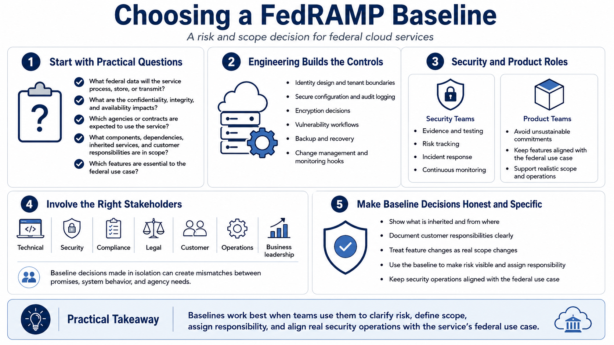

Choosing and Working With a Baseline
Connecting to LMS... Progress: in progress

Narration
Choosing a baseline is a risk and scope decision. Start with practical questions. What federal data will the service process, store, or transmit? What would happen if confidentiality, integrity, or availability were affected? Which agencies or contracts are expected to use the service? What components, dependencies, customer responsibilities, and inherited services are in scope? Which features are essential to the federal use case?
Engineering teams support the baseline by building controls into the service rather than treating compliance as a separate overlay. That includes identity design, tenant boundaries, secure configuration, audit logging, encryption decisions, vulnerability workflows, backup and recovery practices, change management, and monitoring hooks. Security teams support the baseline by managing evidence, testing, risk tracking, incident response, and continuous monitoring. Product teams support it by avoiding commitments the service cannot sustain.
Baseline work should involve the right stakeholders. Technical, security, compliance, legal, customer, operations, and business leaders may all have relevant information. Legal and procurement decisions are outside the purpose of this course, but the security team still needs to understand commitments, customer expectations, and scope boundaries. A baseline chosen in isolation can create mismatches between what the provider promises, what the system does, and what the agency needs.
The most useful baseline discussions are honest and specific. If a control is inherited, show where it is inherited from and what remains for the service to do. If the customer has a responsibility, document it clearly. If a feature changes the boundary, treat that as a real scope issue. Baselines work best when teams use them to make risk visible, assign responsibility, and keep security operations aligned with the service's federal use case.